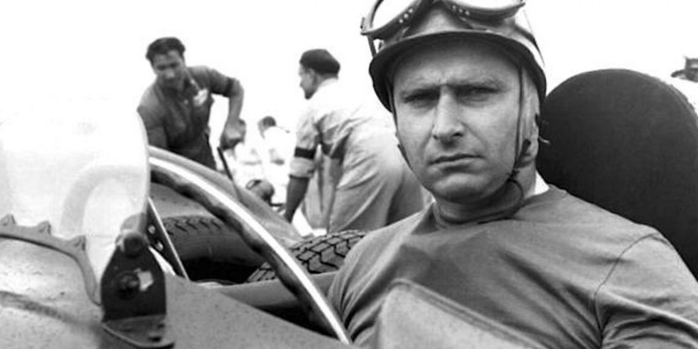
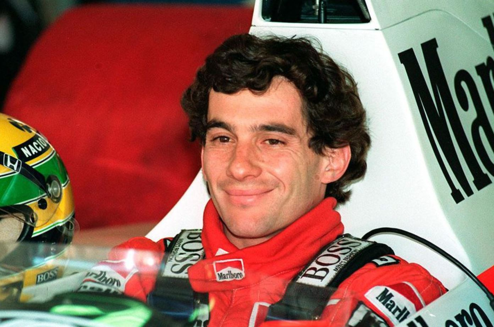
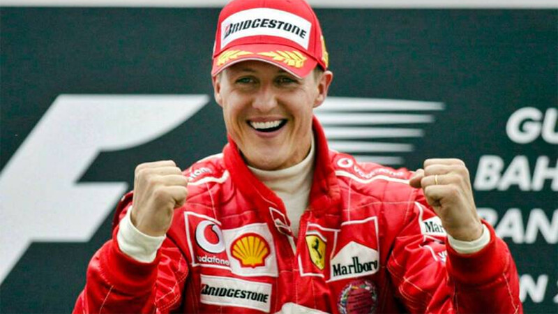
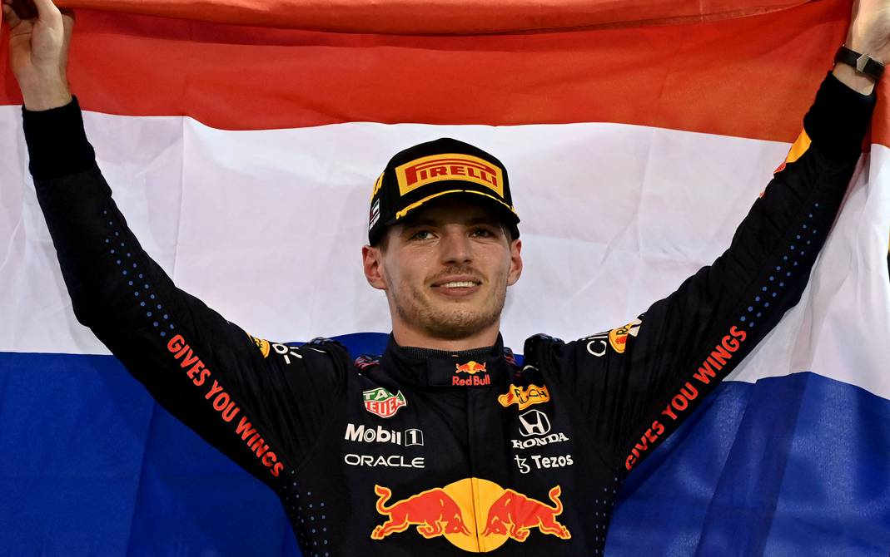

1950-1958
El primer Gran Premio se realizó el 13 de mayo de 1950 en el circuito de Silverstone y fue ganado por el italiano Giuseppe Farina, consiguiendo además el campeonato de 1950 tras vencer a su compañero de equipo, el argentino Juan Manuel Fangio. Sin embargo, Fangio ganó el título en 1951, 1954, 1955, 1956 y 1957. Su racha fue interrumpida debido al bicampeonato del piloto de Ferrari Alberto Ascari. También en esta época se vieron pasar pilotos como el británico Stirling Moss que aunque pudo competir con regularidad, nunca fue capaz de ganar el Campeonato Mundial, y por ese motivo los ingleses lo consideran «el conductor más grande que nunca ganó un título mundial.
El periodo estuvo dominado por las escuderías dirigidas por fabricantes de automóviles —Alfa Romeo, Ferrari, Maserati y Mercedes Benz— que habían competido antes de la guerra. En las primeras temporadas se llegaron a utilizar coches previos a la Segunda Guerra Mundial como el Alfa Romeo 159.Tenían motor frontal, de 1,5 litros de cilindrada sobrealimentados o de 4,5 litros de aspiración natural y neumáticos con dibujo. Los campeonatos mundiales de 1952 y 1953 se realizaron con la normativa de la Fórmula 2, con coches más pequeños y menos potentes, debido al escaso número de coches disponibles de Fórmula 1. Cuando se restableció el Campeonato Mundial de Fórmula 1, los motores estaban limitados a 2,5 litros; en 1954, Mercedes presentó el avanzado W196, que incluía innovaciones como distribución desmodrómica e inyección de combustible, así como una carrocería estilizada. Mercedes ganó el campeonato de conductores dos años consecutivos 1954 y 1955, antes de retirarse de todas las competiciones automovilísticas, tras el desastre de Le Mans en 1955.
1970-1990
En la pista, McLaren y Williams dominaron los años 1980 y 1990; Brabham también fue competitivo durante la primera parte de la década de 1980, al ganar dos mundiales de pilotos con Nelson Piquet. Desarrollado por Porsche, Honda y Mercedes-Benz, en ese período McLaren ganó dieciséis campeonatos —siete de constructores y nueve de conductores—, mientras que Williams utilizó motores de Ford, Honda y Renault para ganar también dieciséis títulos —nueve de constructores y siete de pilotos. La rivalidad entre los pilotos Ayrton Senna y Alain Prost se convirtió en el foco central de la F1 en 1988, y continuó hasta que el francés se retiró a finales de 1993. Senna murió en el Gran Premio de San Marino de 1994 después de chocar contra un muro en la salida de la curva de Tamburello, el mismo fin de semana en que Roland Ratzenberger perdió la vida en un accidente durante la clasificación del sábado.
La FIA ha trabajado para mejorar las normas de seguridad de este deporte. Desde entonces, ningún piloto había muerto en la pista al volante de un coche de Fórmula 1 hasta 2015 con la muerte de Jules Bianchi accidentado en 2014 en Suzuka, si bien también tres comisarios de pista han perdido la vida: uno en el Gran Premio de Italia de 2000, el segundo en el Gran Premio de Australia 2001 y el tercero en el Gran Premio de Canadá de 2013.
1990-2010
Michael Schumacher y Ferrari ganaron cinco campeonatos de pilotos (2000-2004) y seis de constructores (1999-2004) consecutivos, algo sin precedentes. Schumacher estableció muchos récords nuevos, incluidos los de victorias de Gran Premio (91), victorias en una temporada (trece de dieciocho), y más títulos de conductores (siete). La racha de Schumacher terminó el 25 de septiembre de 2005, cuando el piloto de Renault Fernando Alonso se convirtió en el campeón más joven de la Fórmula 1 hasta ese momento. Durante el año 2006, Renault y Alonso volvieron a ganar los dos títulos. Schumacher se retiró a finales de 2006 después de dieciséis años en la Fórmula 1, pero salió de su retiro para la temporada 2010, corriendo para el recién formado equipo Mercedes, durante tres temporadas.
Desde 1983, la Fórmula 1 había sido dominado por equipos especializados en carreras, como Williams, McLaren y Benetton, usando motores suministrados por los grandes fabricantes de automóviles como Mercedes-Benz, Honda, Renault y Ford. A partir de 2000, con la creación del equipo Jaguar, de poco éxito, los nuevos equipos de propiedad del fabricante entraron en la Fórmula 1 por primera vez desde la salida de Alfa Romeo y Renault a finales de 1985. Para el año 2006, los equipos de fabricantes como Renault, BMW, Toyota, Honda y Ferrari dominaron el torneo, teniendo cinco de los seis primeros lugares en el campeonato de constructores. La única excepción fue McLaren, que en ese momento era parte-propiedad de Mercedes Benz.
2010-Actualidad
Todas las victorias de la temporada se las repartieron entre 5 pilotos, los llamados “los 5 fantásticos”: Sebastian Vettel, Fernando Alonso, Mark Webber, Lewis Hamilton y Jenson Button. Michael Schumacher, sobre el que se dipositaron muchas expectativas, resultó ser la gran decepción de la temporada, sin subir ni una sola vez al podio mientras su compañero Nico Rosberg lo hizo hasta en 3 ocasiones. Los cinco candidatos llegaron a la penúltima prueba con opciones matemáticas al título, y cuatro de ellos (Jenson Button se quedó sin opciones tras Brasil)
llegaron a la cita final de Abu Dhabi con posibilidades, algo que nunca había sucedido. En esa carrera, Fernando Alonso llegó con 8 puntos de ventaja sobre Mark Webber, 15 sobre Sebastian Vettel y 24 sobre Lewis Hamilton, con lo que le servía con quedar primero o segundo independientemente de la posición de sus rivales. Pero debido a una serie de circunstancias, entre las que hay el hecho de obsesionarse con Mark Webber y no con Sebastian Vettel y el no poder adelantar al Renault de Vitaly Petrov en unas 35 vueltas, hizo que el alemán de Red Bull se llevara el gato al agua contra todo pronóstico, cuando los focos estaban centralizados en Alonso y Webber.